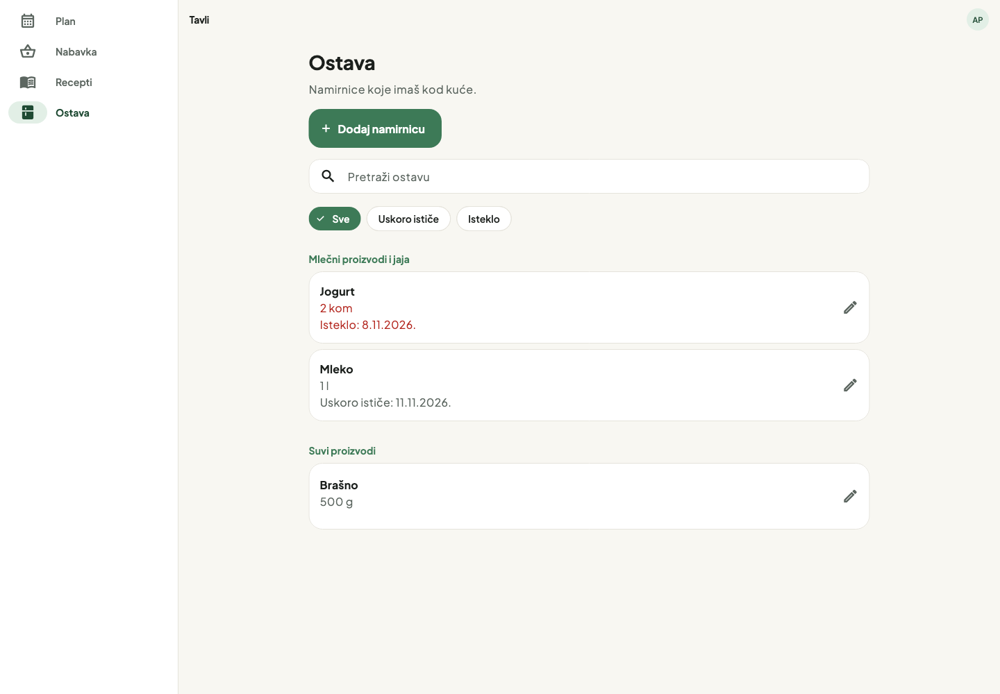

Tavli / Ostava
Ono što imaš kod kuće,
povezano sa sledećim obrokom.
Implementirani su pregled, pretraga, unos, izmena i uklanjanje namirnica. Postojeća baza, prenos iz Nabavke i red za sinhronizaciju koriste iste podatke.
Široki ekran

Potvrđene količine smanjuju nabavku. Nepoznate i istekle zalihe ne pokrivaju brojčanu potrebu. Ponovljeni prijem iste kupovine ne pravi duplikat.
Ovo je galerija stvarnih Flutter ekrana sa probnim podacima. Dugmad menjaju prikaz galerije; ne upisuju namirnice. Funkcionalnost je proverena u aplikacionim testovima. Detalji implementacije i provera.